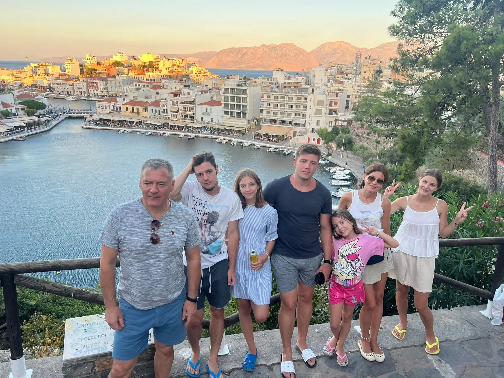

01 / SUBJECT PROFILE
THE FILE IS OPEN.
Adrian
Future doctor. Present-day menace. A person of considerable potential and questionable levels of chill.
ORIGIN: Republic of Moldova
PROFESSION: Doctor in progress
THREAT LEVEL: Charismatic
KNOWN WEAKNESS: Unknown. Subject denies having any.

02 / CLINICAL DEPARTMENT
WHAT'S THE DIAGNOSIS?
PRELIMINARY ASSESSMENT
Diagnosis not yet established.
The Ministry is waiting for the subject to do something suspicious.
03 / INCIDENT RESPONSE
IT'S A MEDICAL EMERGENCY.
Highly realistic scenarios. More or less.
LIVE INCIDENT REPORT
Awaiting dispatch…
Press the button to receive an urgent and entirely unofficial situation report.
04 / GOVERNMENT APPOINTMENTS
A PROMISING CAREER.
NOTICE OF APPOINTMENT
Minister of Good Decisions
Appointment pending. The committee has received several concerns regarding the candidate's decision-making history.
05 / FINAL REVIEW
ONE LAST ASSESSMENT.
After reviewing the evidence and consulting absolutely nobody, the Ministry is ready to issue its final statement.
OFFICIAL MINISTRY VERDICT
CERTIFIED NATIONAL TREASURE
The Ministry confirms that Adrian is an excellent human being.
HAPPY BIRTHDAY, ADRIAN.
THIS DOCUMENT IS UNOFFICIAL. THE COMPLIMENTS ARE NOT.